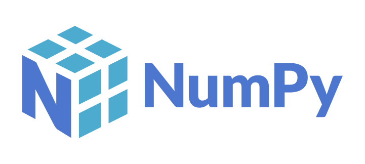

1. 목적과 수집기 구조
1.1 Purpose, Hardware & My Work
Vive 장치를 VR 화면 조작기가 아니라 로봇 연구용 motion·input source로 사용하려면, Linux에서 위치와 자세가 어떻게 갱신되는지, 버튼과 아날로그 입력이 실제로 들어오는지 확인할 도구가 필요했습니다. Tracker는 위치·자세 추적에, Controller는 추적과 사용자 입력을 함께 다루는 데 사용했습니다. 장치를 움직이거나 누른 결과를 공간·수치·파일에서 연결해 보는 프로그램을 만들었습니다.
위치·자세를 추적하는 대상 장치입니다. 장치 pose를 읽는 경로와 Controller의 버튼 입력 경로를 구분했습니다.

트랙패드·트리거·버튼의 형태를 보여 주는 공식 Controller (2018) 참고 사진입니다. 사용 장치의 세대 식별 자료로 제시하는 사진은 아닙니다.
직접 구현한 범위는 장치 탐색·binding, Tracker/Controller class, 공통 pose·input payload, 좌표 처리, PyBullet 표시, Live Plot과 session 로그입니다. SteamVR의 광학 tracking 알고리즘이나 하드웨어 driver를 새로 개발한 것은 아닙니다. 독립 수집기를 만든 작업, 기존 MiMicX Vive 경로를 보완한 작업, 이후 Host bridge 작업은 서로 다른 개발 단계입니다.
프로젝트의 추적 대상은 Vive Controller와 Tracker 3.0입니다. Base Station 기반 tracking을 이용했으며 HMD pose를 수집하지 않았습니다. Ultimate Tracker 검토와 다른 backend 확장은 별도 검토 주제로 두었습니다. 서로 다른 장치의 이름이 비슷하다는 이유로 같은 tracking 경로라고 취급하지 않았습니다.
1.2 Linux Runtime & HMD-Free Operation
실행 환경은 Ubuntu 계열 Linux와 SteamVR/OpenVR, Python입니다. Base Station의 추적 공간에서 장치 pose가 갱신되고, 무선 수신 동글과 SteamVR이 장치 연결을 관리합니다. Python의 OpenVR binding은 이 runtime이 제공하는 pose와 입력 상태를 읽습니다. 동글이 보이는 상태, SteamVR에 장치가 등록된 상태, 유효 pose가 나오는 상태는 각각 확인해야 했습니다.
 Python수집 loop · 장치 abstraction · 로그
Python수집 loop · 장치 abstraction · 로그
NumPy벡터 · 회전 · 수치 처리- Matplotlib시계열 plot · HUD · 입력 선택
| 구성 | 담당하는 일 | 구분할 경계 |
|---|---|---|
| SteamVR / OpenVR | tracking universe·장치 pose·controller state | USB 연결만으로 Python pose가 생성되지 않음 |
| Null Driver / requireHmd 설정 | HMD-free runtime 구성 | HMD 자체를 실제 추적 장치로 쓰는 것이 아님 |
| Python OpenVR backend | runtime 초기화·pose 배열 조회 | 화면 render와 별개인 수집 source |
| PyBullet | 장치 model·축·입력 표시 | 로봇 동역학 성능을 측정하는 simulator 실험과 구별 |
| NumPy / Matplotlib / YAML | 계산·그래프·설정 | 각 도구의 역할을 app loop가 연결 |
HMD 없이 실행하기 위해 Null Driver와 HMD 필수 검사 설정을 조정했습니다. 이 설정은 SteamVR을 headless 센서 driver로 바꾸는 작업이 아니라, HMD가 없는 실험 환경에서 runtime을 구동하기 위한 구성입니다. GUI와 desktop session이 필요한 시각화·runtime 조건도 별도로 유지했습니다.
OpenVR의 tracking universe는 standing·seated·raw 계열로 선택할 수 있습니다. 사용한 binding에서는 raw 설정을 RawAndUncalibrated에 연결했습니다. 이 universe 선택과 프로그램에서 첫 위치를 빼는 원점 보정은 다른 단계입니다. CSV를 다시 볼 때도 어느 tracking 기준에서 어느 보정이 적용됐는지 함께 알아야 합니다.[V1]
1.3 Architecture: One Pose Read, Multiple Consumers
Entrypoint는 설정 파일 위치와 작업 기준 폴더를 고정한 뒤 builder로 backend, viewer, logger, devices를 생성합니다. 설정 파일을 실행한 shell의 위치에 따라 다르게 읽거나 OBJ·log 상대 경로가 달라지는 문제를 줄이기 위해 경로 기준을 main에서 정했습니다. 조립과 반복 실행을 나누어 장치 추가가 loop 전체 수정으로 번지지 않도록 했습니다.
실제 builder는 devices 쪽 OpenVRBackend를 사용합니다. Backend는 runtime을 초기화하고 loop마다 전체 tracked pose 배열을 한 번 읽습니다. Tracker/Controller 객체가 자신의 index에 해당하는 pose를 해석하며, Controller만 입력 상태를 추가로 조회합니다. Backend가 수집을 맡고 장치 class가 payload 해석을 맡으므로, 입력 처리나 표시를 바꿀 때 runtime 초기화까지 함께 수정할 필요가 없었습니다.
Loop는 먼저 장치별 update와 유효 장치 목록을 만들고, 다음 pass에서 장치별 원점 보정 뒤 logger→viewer→plotter를 호출합니다. 소비 경로는 나뉘지만 실제 호출은 같은 loop 안에서 순차적입니다. 그래프를 그리는 시간이 길어지면 수집 loop도 영향을 받으므로, 표시와 수집이 완전히 독립된 비동기 시스템이라고 해석해서는 안 됩니다.
Viewer를 닫거나 KeyboardInterrupt로 종료하면 finally에서 logger 파일, viewer, OpenVR을 정리합니다. 객체 생성·반복 실행·종료의 책임을 나누는 것은 실험을 반복 실행할 때 이전 runtime 상태나 열린 파일을 남기지 않기 위한 구조였습니다.
1.4 Discovery, Serial Binding & Pose Validity
devices 설정이 비어 있으면 DeviceManager가 OpenVR device class와 연결 상태를 확인하고 Controller·GenericTracker만 골라 설정 목록을 만듭니다. HMD와 TrackingReference는 수집 대상 device 객체로 만들지 않습니다. 장치 이름에는 serial suffix를 사용하고, 전체 serial은 binding에 사용했습니다. 공개 예시에서는 실제 serial 대신 별칭을 사용합니다.
수동 설정에서는 반복 실험에 사용할 장치의 serial과 name·role을 고정합니다. 장치 객체는 serial에 해당하는 현재 index를 찾아 cache합니다. Index는 runtime 배열의 위치이고 serial은 장치 식별이므로 재실행 때 index가 바뀌어도 같은 장치를 찾을 수 있습니다. 자동 탐색은 시작 시 장치 생성 과정이며, 이 구조를 계속 연결·해제되는 모든 장치를 동적으로 조정하는 manager와 같은 의미로 쓰지는 않았습니다.
Index를 찾지 못하거나 bPoseIsValid가 false이면 valid=false payload를 만듭니다. 이때 채워진 0 위치와 identity quaternion은 실제 원점에 측정됐다는 뜻이 아닙니다. Viewer와 plotter는 invalid pose를 적용하지 않습니다. 전체 장치가 invalid인 loop는 소비 경로를 건너뛰므로, 로그 행이 없는 구간도 정상적인 정지 상태와 구별해야 합니다.
2. Pose와 입력 계약
2.1 Pose, Controller Input & Time Contracts
| 필드군 | 형태 / 단위 | 의미 |
|---|---|---|
| device_name / role / type / serial / index | 장치 식별 metadata | 표시 이름·분류·물리 identity·runtime 위치 구분 |
| valid | boolean | 현재 pose 해석 가능 여부 |
| pos | 3-vector / 기본 m | 표시축 변환 후, loop에서 장치별 원점 보정 |
| quat | qx, qy, qz, qw | 프로젝트 자세 변환 후 단위 quaternion |
| vel_mps | Controller 제공 3-vector / m·s⁻¹ | OpenVR 선속도, Tracker는 별도 plot 계산 |
| input.trigger / trackpad | scalar / 2-vector | Controller analog input |
| input.buttons / touched | 논리 버튼별 bit 해석 | 눌림과 접촉 구분 |
| t | wall-clock seconds | Python에서 payload 생성 시각 |
OpenVR pose의 mDeviceToAbsoluteTracking은 회전 3×3과 위치 3×1을 가진 3×4 행렬입니다. 위치는 마지막 열에서 추출하고, 회전은 quaternion으로 변환합니다. 같은 배열에 들어 있는 pose라도 장치별 측정 시점과 prediction·runtime 갱신은 별도 문제입니다. Python timestamp는 payload를 만든 시각이며 센서의 원시 광학 측정 timestamp가 아닙니다.[V1]
기본 device scale은 1로 두고 meter 단위를 유지했습니다. Viewer의 mesh scale 0.001은 mm 단위 OBJ 형상을 meter 공간에 맞추는 값입니다. Device 위치 scale과 model 크기 scale을 같은 설정으로 다루면, 모델만 작게 보여야 하는 상황에서 이동량까지 바뀔 수 있어 구분했습니다.
2.2 Decode Analog Axes, Pressed Bits & Touch State
Controller는 pose 외에 getControllerState를 호출합니다. Python binding의 반환 형태가 (성공 여부,state), tuple 또는 state 객체로 달라질 수 있어 adapter에서 성공 여부와 payload를 정규화했습니다. 조회가 실패한 상태를 “아무 버튼도 누르지 않음”과 같은 정상 입력으로 확정하지 않도록 pose와 input을 구별했습니다.[V2]
| 원천 | 논리 값 | 확인할 차이 |
|---|---|---|
| rAxis[0].x / y | trackpad x / y, 보통 −1…1 | 아날로그 좌표와 trackpad click은 별개 |
| rAxis[1].x | trigger, 보통 0…1 | 당긴 정도와 trigger click bit는 별개 |
| ulButtonPressed | menu / grip / trackpad_click / trigger_click / system | button id에 해당하는 bit만 검사 |
| ulButtonTouched | 같은 논리 이름의 touch map | 눌림이 없어도 접촉할 수 있음 |
| inputs 설정 | 입력 종류와 button 목록 선택 | Tracker에 존재하지 않는 버튼을 생성하지 않음 |
Button id b의 눌림은 mask & (1 << b)의 결과로 해석합니다. Axis 배열 위치는 이 Wand 경로의 매핑이며 모든 VR controller에 동일한 물리 조작부를 보장하는 규칙은 아닙니다. UI 숫자, 버튼 on/off, touch 표시를 분리해 trackpad를 만진 것과 실제 클릭한 것을 다르게 확인할 수 있게 했습니다.
2.3 Debug Input by Following the Data Boundary
움직임은 보이는데 trigger·button 값이 없으면 pose tracking부터 다시 만드는 대신 입력 경로를 나눠 확인했습니다. Runtime의 controller state가 성공했는지, analog·mask가 변하는지, payload 이름이 소비자와 일치하는지, 화면 갱신 함수가 빈 값에서 중단되는지를 순서대로 봐야 했습니다.
| 관찰 | 확인 위치 | 판단 |
|---|---|---|
| 미조작 상태에서 0 | analog·pressed bit 변화 비교 | 정상 휴지 입력일 수 있음 |
| 조작해도 state 조회 실패 | OpenVR 성공 flag·packet·axis | runtime 입력 전달 문제 조사 |
| state는 변하지만 UI는 비어 있음 | payload key·API 응답·JS 예외 | 직렬화·표시 계약 조사 |
| pose invalid, input 의미 미확정 | tracking validity와 controller state | 하나의 connected 표시로 합치지 않음 |
이 기준은 이후 MiMicX 입력 표시를 연결할 때도 사용했습니다. 입력을 읽는 코드, worker snapshot, API와 DOM은 서로 다른 경계입니다. 상자나 label을 화면에 그렸다는 사실이 입력이 도착했다는 뜻은 아니었습니다. 후기 runtime version 회귀 사례는 이 보고서의 마지막 적용 절에서 별도로 다룹니다.
3. 좌표계와 자세
3.1 Coordinate Convention: Follow the Complete Operation
OpenVR의 기본 축은 +X 오른쪽, +Y 위, +Z 뒤쪽인 오른손 좌표계입니다. 프로그램의 위치 helper는 먼저 (−z,−x,y)로 재배열하고 X·Y를 다시 뒤집습니다. 최종 위치는 아래처럼 (z,x,y)가 됩니다. 처음 주석에 쓰인 축 이름만 읽고 실제 최종 부호를 결정하지 않았습니다.[V1]
예를 들어 OpenVR에서 (0.10,0.20,−0.30)m인 점은 원점 보정 전 프로젝트 좌표에서 (−0.30,0.10,0.20)m입니다. 이 계산 예제로 각 축을 독립적으로 움직였을 때의 방향을 해석할 수 있습니다. PyBullet에 하나의 고정된 세계 축을 강요한 것이 아니라, 이 viewer가 사용할 표시 convention을 정한 것입니다.
자세는 quaternion 성분을 위치처럼 단순 재배열하지 않습니다. Quaternion을 회전 행렬로 바꾸고 표시축·장치축 보정을 합성한 뒤 다시 quaternion으로 만듭니다. 이 프로젝트의 합성은 오른쪽에 S가 들어가는 장치축 보정을 포함합니다. 순수한 동일 basis 변경인 C R Cᵀ와 구분해야 하며, 위치 축 변환과 모델 외형 회전을 같은 연산으로 취급하지 않았습니다.
3.2 Rotation Matrix to Quaternion, with Stable Branches
입력 행렬의 회전 부분 R에서 quaternion을 계산하고, PyBullet과 payload에는 (x,y,z,w) 순서로 전달했습니다. 라이브러리에 따라 scalar-first 표기를 쓰기도 하므로 q의 네 값이라는 사실보다 순서를 명시하는 것이 중요했습니다. 회전은 quaternion으로 유지하고 RPY는 사람이 읽기 위한 표시로 파생했습니다.
Trace가 양수가 아니면 가장 큰 대각 성분을 기준으로 계산 분기를 바꿉니다. 회전이 180° 근처일 때 positive-trace 식만 쓰면 작은 분모에 민감해질 수 있기 때문입니다. 마지막 normalization으로 quaternion 길이를 1로 맞춥니다. 수식 한 개를 모든 자세에 그대로 적용하는 대신 분기 조건까지 구현했습니다.
3.3 Per-Device Translation Origin, Not Shared Calibration
Loop에서 장치별 최초 valid position을 저장하고 이후 위치에서 뺐습니다. 이 값은 viewer·logger·plot에 전달되므로 CSV 위치도 SteamVR 절대 위치가 아니라 해당 장치의 시작 위치 대비 이동입니다. 장치 A와 B가 서로 다른 곳에서 시작해도 각각 0에서 움직임을 볼 수 있습니다.
이것은 translation origin 보정입니다. 초기 orientation의 역회전을 곱해 자세까지 0으로 만드는 연산은 아니고, 두 장치 사이의 물리적 거리를 유지한 공통 world calibration도 아닙니다. 따라서 A와 B의 상대 좌표를 바로 빼서 실제 장치 간 거리를 구하면 시작 offset이 사라진 결과가 됩니다. 장치 움직임 관찰과 로봇 좌표 calibration의 목적을 나누었습니다.
3.4 Body Pose vs Mesh-Local Orientation and Input Anchors
3D 모델의 OBJ 축과 장치 tracking 축이 다르면 장치를 올바르게 움직여도 외형이 누워 보일 수 있습니다. Model의 mm→m scale, rpy_off, base_quat_off와 visualFramePosition을 별도로 두었습니다. 추가 quaternion과 RPY offset을 합성해 visual shape에 적용하고, 매 frame에는 body position·orientation을 갱신합니다.
물체를 움직이는 body pose와 외형을 맞추는 visual frame은 역할이 다릅니다. 외형의 방향만 틀렸다고 수집 position을 뒤집으면 그래프·CSV까지 바뀝니다. 반대로 tracking 좌표가 틀렸는데 mesh만 돌리면 화면은 그럴듯해도 데이터는 잘못 해석됩니다. 축 표시와 실제 3D 외형을 함께 보며 보정 위치를 구분했습니다.
Trigger gauge와 trackpad dot도 고정 world 위치에 그리지 않았습니다. 장치 local anchor를 orientation의 축 벡터로 world에 옮겨 장치가 회전해도 입력 표시가 따라오게 했습니다. Trackpad 좌표가 dot의 위치를, trigger 크기가 gauge 길이를, pressed·touched bit가 표시 상태를 바꾸도록 연결했습니다.
4. 운동학·필터링·시간
4.1 Velocity Sources & Acceleration by Finite Difference
| 값 | Controller | Tracker |
|---|---|---|
| device payload velocity | OpenVR vVelocity, m/s | 활성 Tracker class에는 vel_mps 없음 |
| 표시 velocity | 제공 속도 ×1000 → mm/s | 필터링된 위치 차분 → mm/s |
| 표시 acceleration | 이전 표시 속도와의 차분 | 이전 표시 속도와의 차분 |
| CSV velocity | payload의 제공 속도 | 없으면 빈 열; plot 파생값을 역으로 저장하지 않음 |
가속도는 OpenVR의 별도 가속도 센서를 그대로 표시한 값이 아니라 Live Plot의 파생값입니다. 첫 sample에는 이전 값이 없으므로 미분값을 초기화하고, Δt가 10⁻⁴s 이하인 경우 불안정한 나눗셈을 피하도록 미분 경로를 건너뜁니다. 표시 위치는 계속 처리할 수 있어야 하므로 짧은 dt를 전체 수집 실패로 바꾸지는 않았습니다.
예를 들어 두 위치 sample 사이에 1mm의 변화가 있고 간격이 1/60s이면 차분 속도는 60mm/s입니다. 작은 위치 흔들림도 짧은 시간으로 나누면 크게 보이고, 다시 미분하면 더 민감해집니다. 이는 계산 예시이며 측정된 tracking 오차가 아닙니다. 필터와 시간 간격을 함께 확인해야 하는 이유를 이 관계로 이해했습니다.
4.2 Deadband, EMA & STOP/MOVE Hysteresis
| 처리 | 설정 | 의미 |
|---|---|---|
| Position deadband | 축별 |p|<2mm →0 | 원점 부근 작은 좌표를 0 처리; 변화량 기반 정지 검출과 다름 |
| Position / RPY EMA | α=0.2 | 표시 진동 완화; 지연 발생 |
| Velocity deadband | 축별 |v|<5mm/s →0 | 작은 성분 제거 |
| Acceleration deadband | 축별 |a|<80mm/s² →0 | 작은 파생 성분 제거 |
| STOP / MOVE threshold | 8mm/s / 15mm/s | 서로 다른 경계로 빈번한 상태 왕복 감소 |
| State hold | 최소 0.2s | 마지막 상태 변경 후 다음 변경 허용 간격 |
STOP 상태에서는 speed가 move threshold를 넘을 때 MOVE로, MOVE 상태에서는 stop threshold보다 작을 때 STOP으로 바꿉니다. 두 경계 사이에서는 이전 상태를 유지하고 상태 변경 간격도 제한합니다. 0.2s는 threshold를 연속 충족해야 하는 settling window가 아니라 최소 상태 유지 시간입니다.
α를 작게 하면 흔들림은 줄지만 변화가 늦게 보입니다. 또 position deadband는 각 좌표의 원점 부근을 0으로 만드는 것이므로 정지한 장치의 모든 위치 노이즈를 제거하지는 않습니다. 필터 후의 부드러운 그래프를 raw tracking 정확도가 높아진 결과로 해석하지 않고, 원래 입력·표시용 처리·상태 판정을 나눠 사용했습니다.
4.3 RPY for Inspection, Quaternion for Orientation
Quaternion의 네 성분만으로 회전을 직관적으로 보기 어려워 Live Plot에 Roll·Pitch·Yaw를 표시했습니다. Roll과 Yaw는 분자·분모의 부호를 함께 사용하는 atan2로 구하고, Pitch는 sinp의 범위를 제한해 ±π/2 끝값을 처리합니다. atan2는 두 성분의 부호를 함께 사용하므로 단순히 두 값을 나눈 arctan보다 회전의 사분면을 보존할 수 있습니다.
RPY는 degree로 변환한 뒤 성분별 EMA를 적용합니다. 이 처리는 quaternion 공간에서의 회전 보간이나 ±180° 경계 unwrap과 같은 연산은 아닙니다. 자세 자체는 quaternion으로 유지하고, 회전 경계에서 RPY 숫자가 급변하는 현상과 실제 장치가 갑자기 뒤집힌 현상을 구분해 봐야 했습니다.
4.4 Capture Target Rate, Plot Draw Rate & Timestamp Meaning
Loop의 기본 목표는 60Hz이며 한 iteration의 작업 시간을 뺀 나머지만 sleep합니다. 시간이 이미 초과되면 추가 대기를 하지 않습니다. 이 설정을 실제 달성한 고정 60FPS나 device sampling rate로 제시하지 않았습니다. PyBullet·plot·CSV와 진단 출력이 같은 loop의 시간 예산을 사용합니다.
Live Plot은 최대 draw rate 25Hz, 약 10초의 표시 window로 구성했습니다. 유효 update에서 buffer와 파생값을 갱신하되 화면 redraw는 제한합니다. 수집 loop, 장치 pose 갱신, 표시 draw rate는 서로 다른 주기입니다. Graph가 25Hz로 보인다고 CSV 기록도 같은 빈도라고 해석할 수는 없습니다.
Payload의 t는 장치 update 시점의 wall clock이고 CSV t_rel은 처음 기록한 row의 t_abs를 뺀 값입니다. 프로그램 실행 시작이나 각 장치의 첫 유효 pose 시각과 반드시 같지 않습니다. 한 OpenVR pose 배열을 공유하는 구조도 여러 장치의 동일 sensor acquisition timestamp를 보장하지는 않으므로, 장치 간 상대 운동을 분석할 때는 이 시간 의미를 함께 고려해야 합니다.
5. 시각화와 기록
5.1 3D View, Live Plot & HUD as Diagnostic Instruments
PyBullet에서는 mesh 또는 sphere를 등록하고 유효한 pose마다 body 위치·자세를 갱신합니다. 이름과 RGB 축으로 장치를 식별하고, Controller local plane 위의 trackpad dot·trigger gauge·버튼 표시로 입력 변화가 공간 pose와 함께 보이게 했습니다. 단순히 model이 나타나는 것과 frame마다 transform이 적용되는 것을 별도로 확인했습니다.
Live Plot은 위치·속도·가속도 창과 RPY 창, Controller HUD를 제공합니다. c/t/a로 Controller·Tracker·전체 목록을 필터링하고 n/p 및 숫자로 대상 장치를 고릅니다. Device 선택 시 표시 buffer와 미분 기준을 정리해 다른 장치의 trace를 한 시계열로 그대로 이어 붙이지 않도록 했습니다.
3D에서 이동 방향을 보고 숫자로 축·단위를 대조하고 CSV로 다시 확인하는 과정이 필요했습니다. 그림이 자연스럽게 움직인다는 이유만으로 pose 변환이 맞다고 확정할 수는 없습니다. Model offset으로 외형만 맞춘 경우와 실제 좌표가 올바른 경우를 축과 로그에서 구분하는 것이 viewer의 역할이었습니다.
5.2 CSV / JSONL: What Is Stored and What Is Only Plotted
| 대상 | CSV | JSONL / Plot와의 관계 |
|---|---|---|
| 시간 | t_abs / t_rel | JSONL은 payload의 t; CSV의 t_rel은 logger 첫 row 기준 |
| 장치 | name·role·type·serial·index·valid | 실제 파일의 식별 정보는 공개 예시에서 익명화 |
| Pose | x_m·y_m·z_m / qx·qy·qz·qw | 원점 보정 후 위치, quaternion 순서 유지 |
| 속도 | payload vel_mps가 있을 때 기록 | Tracker의 plot 차분 속도는 CSV로 역전파하지 않음 |
| Controller input | trigger·trackpad x/y·pressed buttons | 없는 항목은 빈 열; JSONL은 input dict 보존 |
| Touch / 가속도 / RPY | 공통 CSV header에는 없음 | Touch는 payload/JSONL, 가속도·RPY는 Plot 파생값 |
Logger가 viewer와 plot보다 먼저 payload를 받아 파일에 씁니다. CSV는 정해진 header로 입력을 평탄화하고, JSONL은 device dict를 한 줄씩 저장합니다. 따라서 “실시간으로 본 모든 값이 그대로 저장된다”가 아니라, 어떤 값이 source이고 어떤 값이 표시 단계에서 계산됐는지 field별로 알아야 합니다.
파일명에는 session 이름과 실행 시각을 넣어 반복 실험을 분리했습니다. 하나의 파일에 장치별 row가 섞일 수 있으므로 사후 분석에서는 device_name과 timestamp로 묶고 valid를 확인합니다. Tracker에 없는 입력이나 속도를 0으로 채운 실제 측정처럼 해석하지 않도록 빈 값과 invalid pose를 구분했습니다.
5.3 Configuration That Reaches the Executing Path
| 설정 | 실행에서 사용하는 부분 | 운영 시 해석 |
|---|---|---|
| backend.universe | OpenVR tracking universe | standing/seated/raw 기준 선택 |
| backend.hz | 현재 main에서 run_loop 인자로 전달하지 않음 | YAML 숫자만 바꾸어 loop rate가 변했다고 가정하지 않음 |
| viewer.enabled | viewer 생성 여부 | 별도의 gui 설정으로 render backend가 모두 바뀌는 구조는 아님 |
| logger.out_dir / session / fmt | 경로·파일 구분·CSV/JSONL | format과 fmt 이름을 혼동하지 않음 |
| devices=[] / 명시 목록 | 시작 시 탐색 / serial binding | 실험 편의성과 반복 장치 고정의 선택 |
| inputs / viz / visual | 입력 선택·HUD·model 옵션 | 데이터 단위와 mesh 보정 옵션을 구분 |
실행은 SteamVR의 장치 상태를 확인한 뒤 Python 환경과 config를 준비하고 entrypoint를 시작하는 순서입니다. README·requirements·environment 선언의 차이는 실제 import와 builder가 사용하는 옵션을 기준으로 정리했습니다. 파일에 설정 항목이 존재하는 것과 실행 경로에 연결된 것은 다른 문제였습니다.
반복 실험을 위해 바꿀 값은 configuration으로 모으되, 옵션 이름과 전달 경로도 함께 유지해야 합니다. 장치 선택·좌표 scale·model offset·로그 session을 한 번에 바꾼 뒤 결과만 보면 원인을 찾기 어렵습니다. Binding, 공간 변환, 표시, 저장 조건을 나누어 확인하는 방식으로 실행 환경을 정리했습니다.
6. MiMicX 연동과 설계 판단
6.1 MiMicX Follow-Up: Calibration Start Haptic Feedback
독립 Collector 이후 MiMicX에서는 기존 Vive 장치·robot binding과 calibration 절차 위에 입력 표시와 시작 피드백을 연결했습니다. 특히 화면에서 Calibration Start를 눌렀을 때 해당 Controller에 진동을 주어, 작업자가 시선을 화면에 고정하지 않아도 절차의 시작을 인지할 수 있게 했습니다. 기존 Vive teleoperation 전체를 새로 만든 작업과는 구분합니다.
현재 경로는 선택한 device handle과 transport로 ViveClient를 만들고 haptic stage에서 짧은 pulse를 반복합니다. 약 3초 동안 3999μs pulse를 20ms 간격으로 요청한 뒤, 시작 구간의 시간을 확보하고 Home 이동·측정 절차로 이어집니다. API duration은 microseconds이고 반복 간격은 seconds이므로, 단위와 실제 이벤트 위치를 구분했습니다.
Haptic 호출은 대상이 Controller인지 검사해 pulse를 보냅니다. 진동 오류를 calibration 전체 중단으로 바꾸는 interlock은 아니며, 촉각 cue를 받았다고 calibration 결과가 저장되거나 robot이 준비됐다는 뜻도 아닙니다. 설계 단계의 여러 event pattern을 전부 적용한 기능으로 나열하지 않고, 실제 연결한 Calibration Start 동작을 설명합니다.
6.2 MiMicX Input Display: UI Presence vs Live Samples
MiMicX에서는 Controller 입력 UI는 있지만 값이 빈 표시로 남는 문제가 있었습니다. 장치 monitor가 check API를 주기적으로 읽고, worker snapshot의 controllers와 top-level payload를 화면에 전달하는 경로를 확인했습니다. 빈 controllers 배열과 표시 key의 불일치는 render 갱신을 막을 수 있어, 목록이 비어 있을 때의 처리와 논리 입력 이름을 함께 정리했습니다.
| 단계 | 점검 | 반영 |
|---|---|---|
| 장치 poll | pose와 controller input 결과 | 예외·invalid와 정상 0 구분 |
| snapshot / API | controllers 목록과 trigger·menu·grip·trackpad key | 소비자가 읽는 이름과 alias 대응 |
| UI 선택 | 빈 목록 / 선택된 controller | undefined 값을 정상 sample처럼 접근하지 않음 |
| 실제 조작 | 화면의 analog·button 변화 | 정적 UI 생성과 실제 입력 갱신을 나눠 확인 |
입력 숫자가 화면에서 변하는 것을 확인한 뒤에도 terminal의 JSON 파싱 오류가 따로 나올 수 있었습니다. 진단 명령의 stdin·줄바꿈 오류와 실제 API·UI의 데이터 전달 실패를 같은 현상으로 묶지 않았습니다. 진단 도구가 실패하면 그 출력부터 정상화하고, 실제 문제가 관찰된 화면과 입력을 다시 대조해야 했습니다.
6.3 Later Runtime Regression: Pose Alive, Input Inactive
2026년 6월의 별도 조사에서는 SteamVR 2.16.x에서 pose는 계속 바뀌지만 getControllerState가 실패하고 packet·button·axis가 갱신되지 않았습니다. MiMicX를 거치지 않는 Host OpenVR monitor에서도 같은 결과였기 때문에, 이번에는 단순 UI key 문제와 구분했습니다.
SteamVR Input action 경로도 시험했습니다. Manifest 등록과 identify는 성공했지만 role별·unrestricted action이 모두 inactive였습니다. Legacy API만 다른 API로 바꾸면 해결된다는 가설은 충분하지 않았습니다. 이후 당시 환경에서 pre-2.16 build로 되돌리자 입력이 복구됐고, WiVRn과 SteamVR을 함께 열어도 동작하는 것을 확인해 단순 runtime 공존 충돌 가설도 정리했습니다.
이 사례는 pose가 있다는 사실만으로 입력 pipeline 전체가 정상이라고 볼 수 없음을 보여 줬습니다. 독립 Collector의 원래 구현, MiMicX의 snapshot·UI 계약 수정, 후기 SteamVR version 회귀는 발생 경계와 수정 방법이 서로 다릅니다. Host bridge의 구조와 Docker 장치 접근은 관련 보고서에서 이어집니다.
6.4 Functional Verification and Interpretation
| 대상 | 확인한 동작 | 해석 |
|---|---|---|
| 장치 | Tracker/Controller 탐색·serial binding·유효 pose 갱신 | 시작·식별·수집 경로 연결 |
| Controller | trigger·trackpad·pressed input과 로그 변화 | 실제 조작이 UI·파일로 전달 |
| 3D | model 이동·회전·축·입력 anchor 표시 | 공간 변환과 외형 보정 비교 |
| Live Plot | 위치·속도·가속도·RPY와 장치 선택 | 시간 변화 및 파생값 관찰 |
| 저장 | session 파일·공통 header·device row·시간 | 후처리에서 구분할 수 있는 기록 |
| MiMicX Start | 대상 Controller 진동 | Calibration 시작 cue |
| 후기 입력 회귀 | Host API·action 경로·runtime version 비교 | 입력 전달 실패 경계와 복구 조건 구분 |
움직임과 입력이 바뀌는지 확인하는 기능 검사, 변환식·단위의 계산 확인, 실제 UI와 파일의 연결 확인을 함께 사용했습니다. 표시용 filtering과 tracking 자체의 정확도, 목표 loop rate와 실제 처리율은 별개의 값입니다. 외부 제품 사양이나 configuration 숫자를 이 프로그램의 실측 성능으로 대신하지 않았습니다.
6.5 Engineering Note
이 작업에서 값을 얻는 것보다 그 값의 좌표·단위·시점·처리 단계를 설명하는 것이 더 중요하다는 걸 배웠습니다. Mesh를 돌리면 화면은 맞아 보일 수 있지만 기록 좌표까지 바뀌어야 하는 것은 아니고, 장치별 원점을 빼면 이동은 비교하기 편해져도 장치 간 실제 거리는 사라집니다. 같은 “좌표 보정”이라는 말 아래 서로 다른 연산을 넣지 않게 됐습니다.
속도와 가속도에서는 보기 좋은 그래프가 정확한 원시 신호와 같지 않다는 점을 이해했습니다. 미분은 작은 흔들림과 dt 오차를 키우고 필터는 흔들림을 줄이는 대신 반응을 늦춥니다. 신호를 개선한다는 판단에는 무엇을 제거했고 무엇을 늦췄는지에 대한 설명이 필요했습니다. Source와 표시 경로를 분리한 이유도 여기에 있습니다.
또한 tracking·입력·화면·파일을 하나의 connected 상태로 묶지 않게 됐습니다. Pose는 살아 있는데 입력은 없을 수 있고, UI는 그려졌는데 sample은 도착하지 않을 수 있었습니다. 정상처럼 보이는 앞 단계에서 멈추지 않고, 실제 현상이 나타난 경계까지 데이터를 따라가며 확인하는 방식을 익혔습니다.
References
- [V1] Valve — OpenVR API definitions
Tracking pose·좌표 convention·device API 구조의 공식 정의. Collector의 표시축과 파생 계산은 별도 구현입니다.
- [V2] Valve — IVRSystem::GetControllerState
Controller state 성공 여부·axis·button 해석의 공식 API 참고.
- [V3] HTC VIVE — Tracker (3.0)
대상 장치 구조·공식 사진 출처. 제품 사양을 Collector의 측정값으로 사용하지 않습니다.